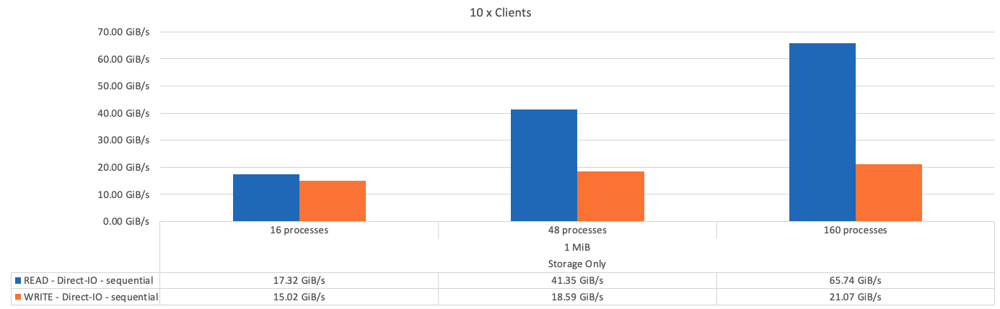

请求文档变更
请求文档变更 在 GitHub 上编辑
在 GitHub 上编辑 提供者指南
提供者指南设计验证
提供者
NetApp解决方案 上的BeeGFS的第二代设计已使用三个组件配置文件进行了验证。
配置配置文件包括以下内容：
-
一个基础组件、包括BeeGFS管理、元数据和存储服务。
-
BeeGFS元数据加上存储构建块。
-
一个BeeGFS纯存储组件。
这些组件连接到两个Mellanox Quantum InfiniBand (MQM8700)交换机。此外、还将10个BeeGFS客户端连接到InfiniBand交换机、并用于运行综合基准实用程序。
下图显示了用于验证NetApp解决方案 上的BeeGFS的BeeGFS配置。

BeeGFS文件条带化
IOR带宽测试：多个客户端
IOR带宽测试使用OpenMPI运行合成I/O生成器工具IOR的并行作业(可从获取 "HPC GitHub")连接到一个或多个BeeGFS组件。除非另有说明：
-
所有测试都使用传输大小为1 MiB的直接I/O。
-
BeeGFS文件条带化设置为1 MB的机克大小、每个文件一个目标。
以下参数用于IOR、并对区块数进行了调整、以使一个组件的聚合文件大小保持在5 TiB、而三个组件的聚合文件大小保持在40 TiB。
mpirun --allow-run-as-root --mca btl tcp -np 48 -map-by node -hostfile 10xnodes ior -b 1024k --posix.odirect -e -t 1024k -s 54613 -z -C -F -E -k
下图显示了一个BeeGFS基础(管理、元数据和存储)组件的IOR测试结果。

下图显示了一个BeeGFS元数据+存储组件的IOR测试结果。

下图显示了一个BeeGFS纯存储组件的IOR测试结果。

下图显示了三个BeeGFS组件的IOR测试结果。

正如预期、基础组件与后续元数据+存储组件之间的性能差异可忽略不计。比较元数据+存储构建块和纯存储构建块后、由于用作存储目标的驱动器增加、读取性能略有提高。但是、写入性能没有显著差异。为了提高性能、您可以将多个组件添加到一起、以线性方式扩展性能。
IOR带宽测试：单个客户端
IOR带宽测试使用OpenMPI通过一个高性能GPU服务器运行多个IOR进程、以探索单个客户端可实现的性能。
此测试还会将客户端配置为使用Linux内核页面缓存(tuneFileCacheType =原生)时BeeGFS的重新读取行为和性能与默认的`缓冲区`设置进行比较。
原生 缓存模式会在客户端上使用Linux内核页面缓存、从而使重新读取操作可以来自本地内存、而不是通过网络重新传输。
下图显示了三个BeeGFS组件和一个客户端的IOR测试结果。


|
在这些测试中、BeeGFS条带化设置为1 MB的机克大小、每个文件有8个目标。 |
尽管使用默认缓冲模式时写入和初始读取性能较高、但对于多次重新读取相同数据的工作负载、原生 缓存模式会显著提升性能。对于深度学习等工作负载来说、这种提高的重新读取性能非常重要、因为深度学习会在许多时间内多次重新读取同一数据集。
元数据性能测试
元数据性能测试使用MDTest工具(包含在IOR中)测量BeeGFS的元数据性能。这些测试利用OpenMPI在所有十个客户端节点上运行并行作业。
以下参数用于运行基准测试、其中进程总数从10扩展到320、步长为2倍、文件大小为4 k。
mpirun -h 10xnodes –map-by node np $processes mdtest -e 4k -w 4k -i 3 -I 16 -z 3 -b 8 -u
元数据性能首先使用一到两个元数据+存储组件进行衡量、以显示性能如何通过添加更多组件进行扩展。
下图显示了一个BeeGFS元数据+存储组件的MDTest结果。

下图显示了包含两个BeeGFS元数据+存储组件的MDTest结果。

功能验证
在验证此架构的过程中、NetApp执行了多项功能测试、其中包括：
-
通过禁用交换机端口使单个客户端InfiniBand端口出现故障。
-
通过禁用交换机端口使单个服务器InfiniBand端口出现故障。
-
使用BMC触发服务器立即关闭。
-
妥善地将节点置于备用状态并将服务故障转移到另一节点。
-
妥善地将节点重新联机、并将服务故障恢复到原始节点。
-
使用PDU关闭其中一个InfiniBand交换机。所有测试均在压力测试期间执行、并在BeeGFS客户端上设置了`ssysSessionChecksEnabled：false`参数。未发现I/O错误或中断。
|
|
存在一个已知的问题描述 (请参见 "ChangeLog")当BeeGFS客户端/服务器RDMA连接因主接口丢失(如`connInterfacesFile`中所定义)或BeeGFS服务器发生故障而意外中断时、活动客户端I/O可能会挂起多达十分钟、然后才能恢复。如果BeeGFS节点已妥善置于待机状态和待机状态并处于待机状态以进行计划内维护、或者正在使用TCP、则不会发生此问题描述。 |
NVIDIA DGX A100 SuperPOD验证
NetApp使用一个类似的BeeGFS文件系统验证了用于NVIDIA DGX A100 SuperPOD的存储解决方案 、该文件系统由三个组件组成、并应用了元数据和存储配置文件。资格认定工作涉及使用20台DGX A100 GPU服务器测试此NVA所述的解决方案 、这些服务器运行各种存储、机器学习和深度学习基准。
有关详细信息，请参见 "采用NetApp技术的NVIDIA DGX SuperPOD"。